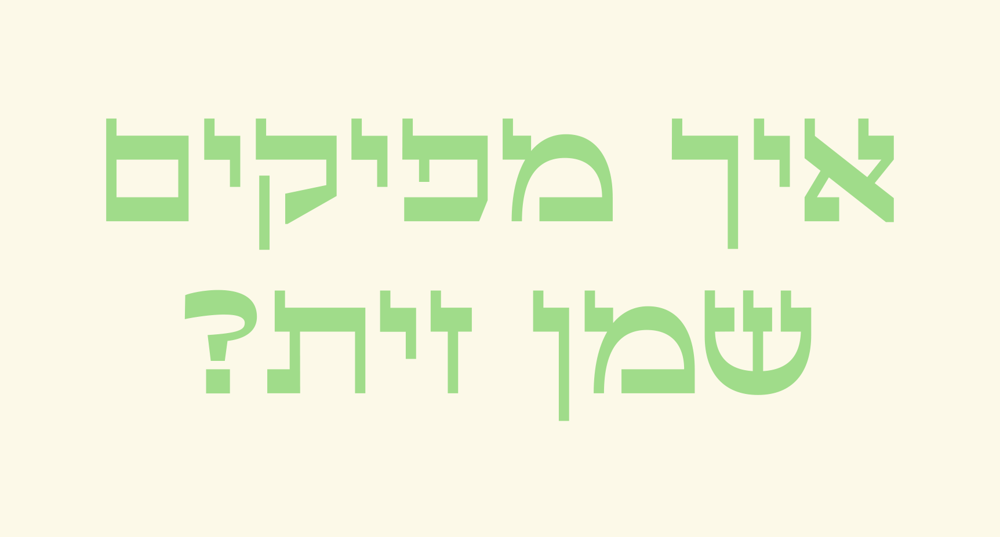
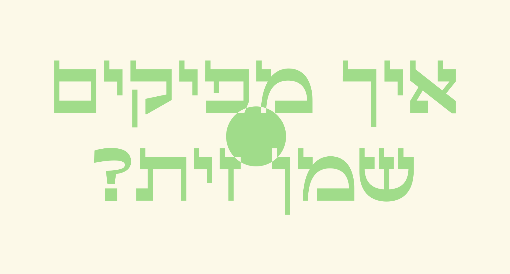
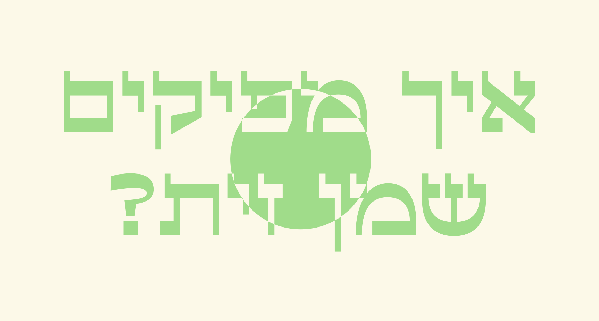
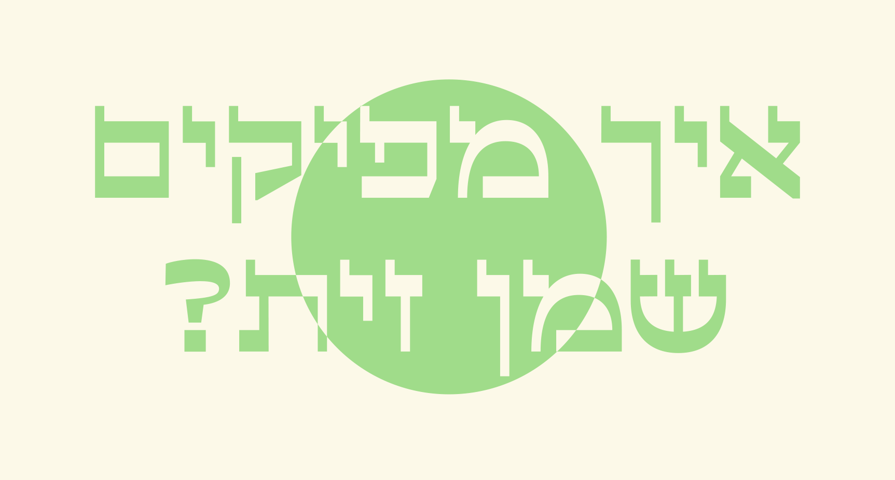
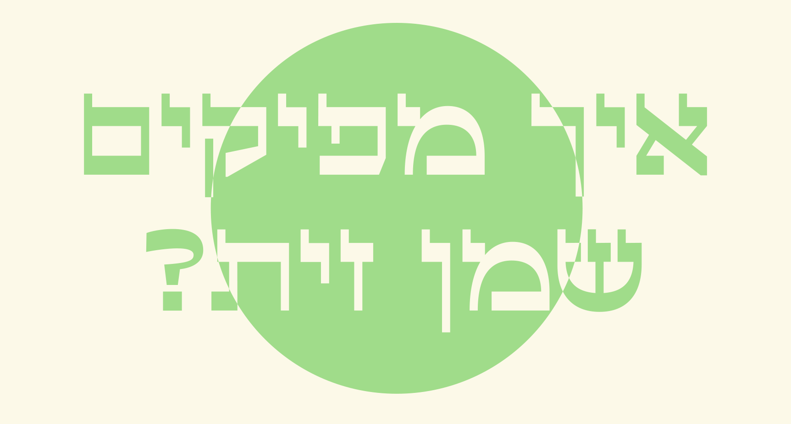
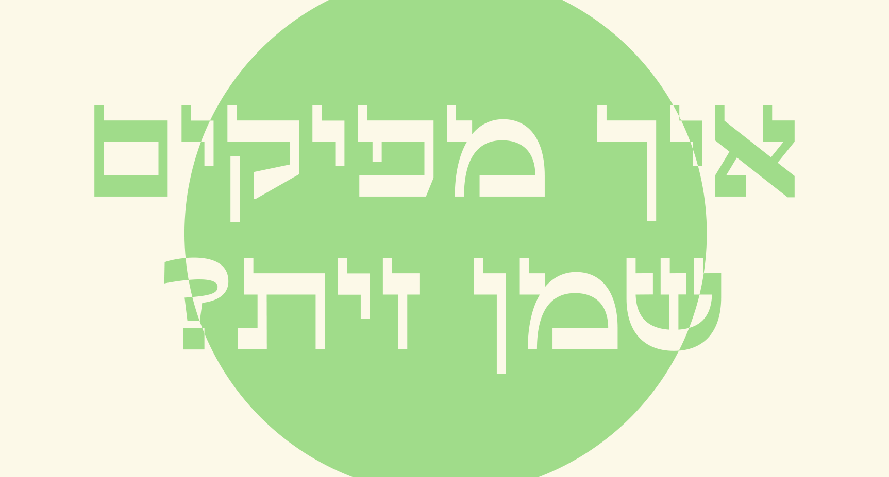
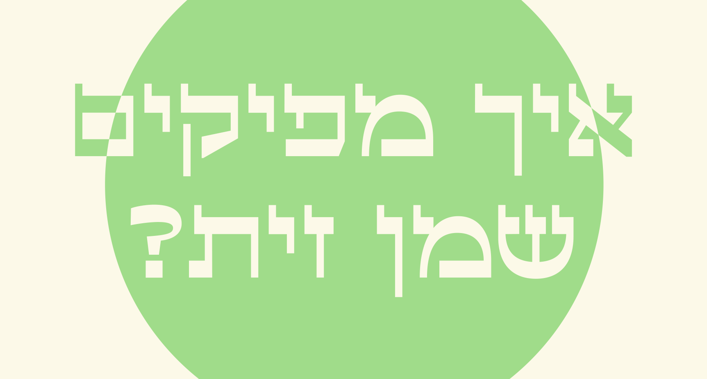
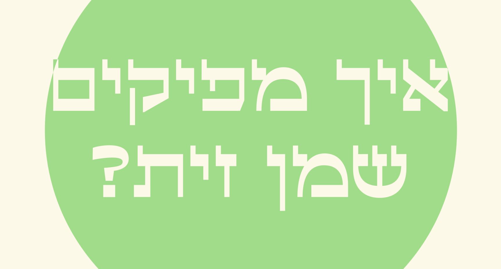
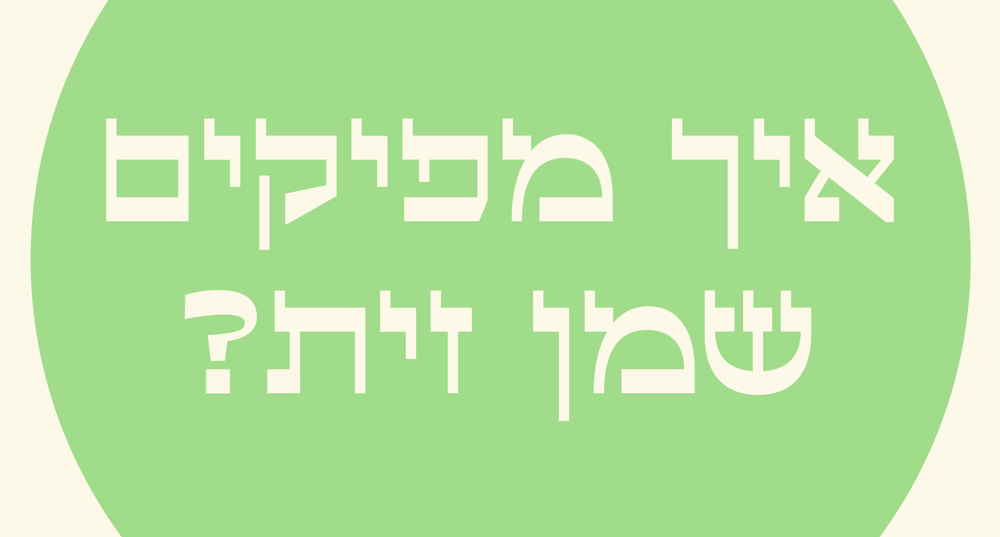
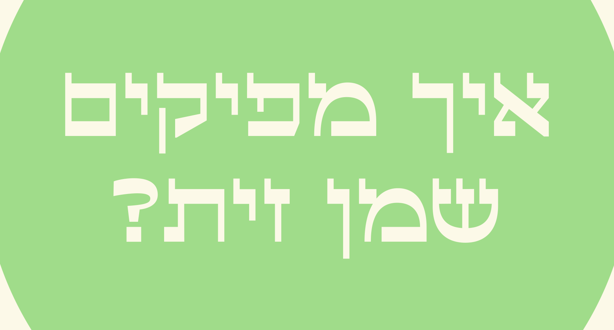


 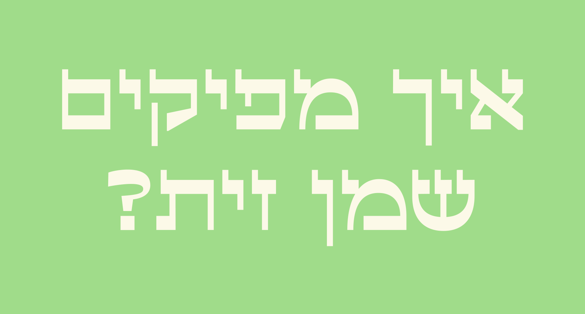
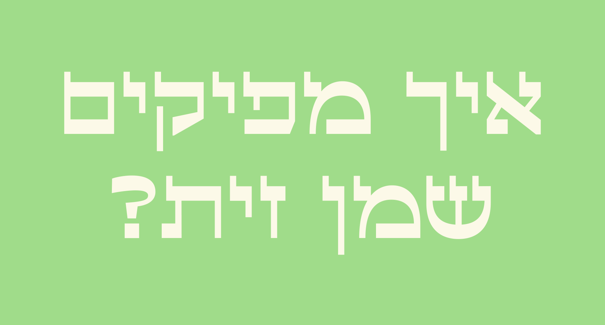


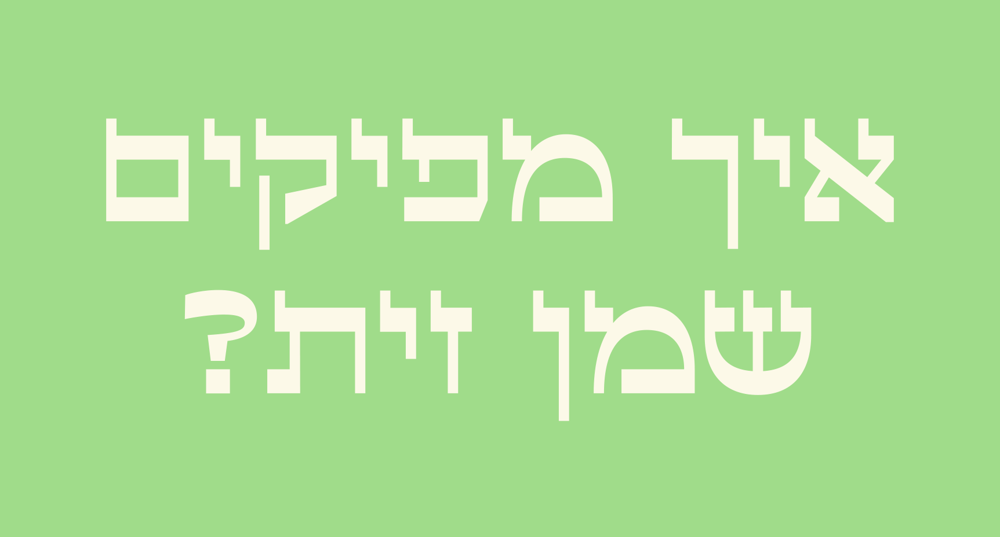
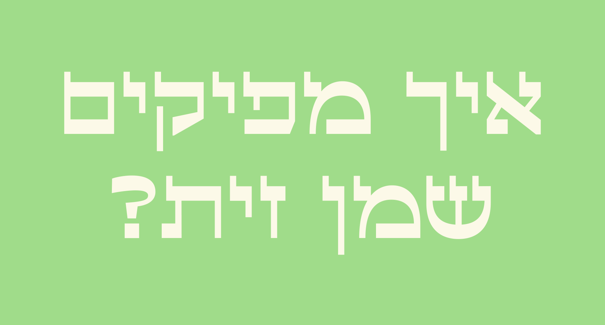


שיטת החליבה
קטיף יחיד של
הזיתים, אל תוך מיכל
צמוד לגוף כמו כל
קטיף אחר.


שיטת הנקיפה
פריסת יריעת בד או ניילון על הארץ והפלת הזיתים לאדמה ע”י נקישה על הענפים בין אם באמצעות מוט, מגרפה, או כלי גינון המתאמים לכך מבלי להזיק לעץ עצמו כמובן.